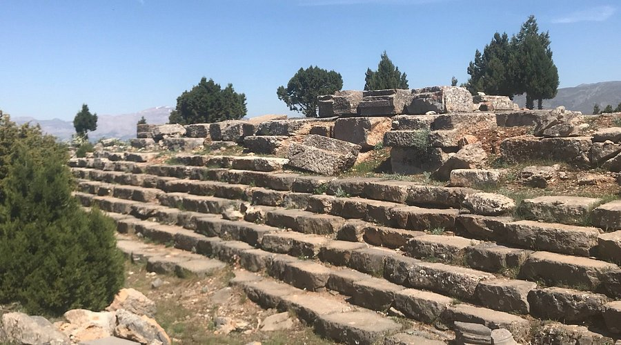
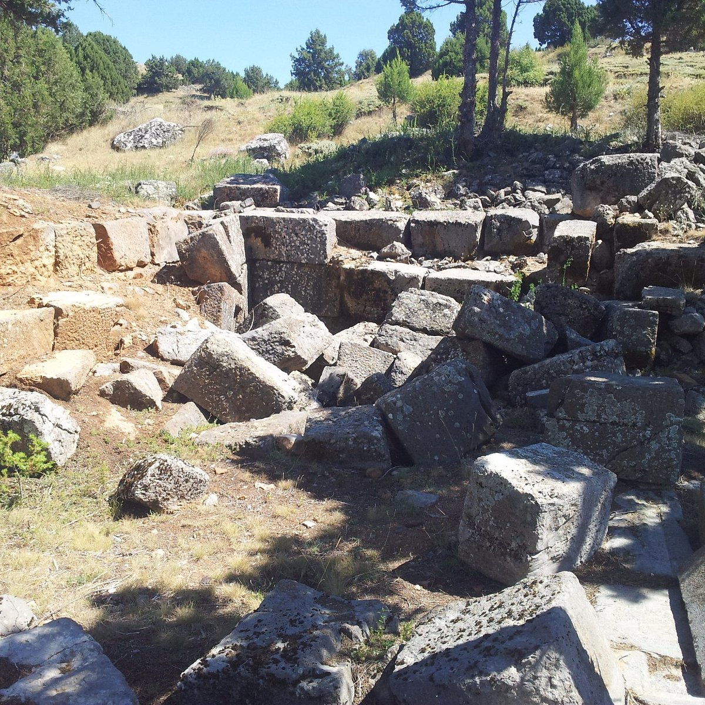

Men Tapınağı
Antiokheia antik şehrinin yaklaşık 5 km. (kuş uçuşu 3.5 km.) güneydoğusunda, yaklaşık 1600 m. yükseklikteki Gemen Korusu’nda, Anadolu’nun eski inanışlarından Ay Tanrısı Men adına yapılmış bir tapınak çevresinde toplanmış yapılardan oluşan bir kutsal alan bulunmaktadır. Kutsal Alan, Antiokheia’nın Frig devrinden Erken Hristiyanlık devrine dek baştanrısı olmuş Men adına, tüm dünyada şehirleşmiş tek dinsel merkez özelliği taşımaktadır, benzeri yoktur. Gemen Korusu, bugün bile, çıplak Sultandağları üzerinde Antiokheia’nın baş tanrısının (Patrios Theos) kutsal ağacı çamlarla kaplı olmasıyla dikkat çeker. Tepe, diğer adını (Karakuyu) kutsal alan içindeki kurumuş su kaynağından almıştır. Kutsal Alan, yaklaşık 400 m. aşağıdaki Antiokheia’nın egemenlik alanı olan günümüz Yalvaç Ovası’nı, güneydoğudaki Beyşehir Gölü’nü ve güneybatıdaki Eğirdir Gölü’nü aynı anda görebilen, tüm araziye hakim bir noktada kurulmuştur. Araştırmacıların Antiochia’da kazılara başladığı 20. Yüzyıl başlarında, Strabon’un Geographika kitabında bahsettiği Men Kutsal Alanı’nı araştıran Ramsay ve ekibi, Antiochia’nın güneydoğusundaki bu tepenin özelliğini keşfetmişler, yaptıkları araştırma gezilerinden birinde buldukları, yanındaki kayalarda adak stelleri (yazılı levhalar) işlenmiş olan kutsal yol onları Men Kutsal Alanı’na ulaştırmıştır. Araştırmacılar burada temenos (çevresi duvarla çevrili kutsal alan) içinde bir tapınak, daha küçük başka bir tapınak, stadion, tören salonu, kült yemeklerinin yendiği bir ev (andron) ve ev benzeri, 20 kadar niteliği tam anlaşılamayan yapıdan oluşan bir kutsal alan ve daha sonraki yüzyıllarda inşa edilmiş kilise kalıntıları bulmuşlardır. Kalıntıların İ.Ö. 4. - İ.S. 4. yüzyıllar arasına tarihlenen uzun bir sürece, dolayısıyla sağlam kökleri olan güçlü bir külte ait olduğu bulunan yazıtlardan anlaşılmıştır. Kutsal Alanın en etkileyici yapısı olan, temenos içindeki Men Tapınağı, bir sıra sütunla çevrelenmiş (Peripteros) İon düzeninde 11x6 sütunlu olup, podyum tabanında 31x17.4 m., podyum üstünde 25x 12.5 m. boyutlarındadır. Güneybatı ve kuzeybatı yönünde 10’ar basamak, güneydoğu ve kuzeydoğu yönlerinde ise 6’şar basamaklı ilginç bir podyum üzerinde yükselmiştir. Temenos duvarları üzerinde, güneybatı duvarında daha yoğun olmak üzere Tanrı Men’den yardım, şifa, koruma dileyen, rüyalarını anlatan, teşekkürler sunan, kısaca tüm yaşamlarını paylaşan insanlar tarafından adanmış yazıtlı steller bulunmaktadır. Men, Anadolu’nun özellikle iç-batı bölgelerinde genel kabul görmüş, yoksul, güçsüz, hasta insanların koruyucusu, sembolü olan hilal şeklindeki Ay’ın gizemli gücüyle insanlara iyilik ve şifa dağıtan, kökleri İ.Ö. 4. binde Mezopotamya’ya dek inen bir tanrıdır. Men, genellikle omuzlarının üzerinde iki yana açılmış, benzerini neolitik döneme dek gördüğümüz gizemli semboller olan boynuz biçiminde ayça (ayın ince hilal hali) ile betimlenmiştir. Tanrı Men’in kutsal hayvanları boğa ve aslandır. Koloni döneminde akropol üzerine yerleşen insanların Men kültünü tepeden aşağıya, ovaya taşıdıkları ve Augustus Kutsal Alanı’ndaki Mabedin öncesinde Men kültü için yapıldığı bilinmektedir. Çünkü, Augustus Tapınağı’nın mimarisini de etkileyen “bukranionlar” (Boğa başları) Men’in sembolüdür. Perseus takımyıldızı da, tam boğanın üzerindedir ve aslanın yerini alarak, boğayı, yani karanlık ve soğuk çağı sona erdiren aydınlık ve verimli tanrısal gücün kişileşmiş sembolüdür. İnsanlığın varoluşundan beri eski dünyanın merkezinde bir arada varolmuş, kökleri yüzeysel bakıldığında anlaşılamayacak kadar doğayla iç içe ve derinlerde pek çok inanış, Anadolu topraklarında birlikte yaşamıştır.

